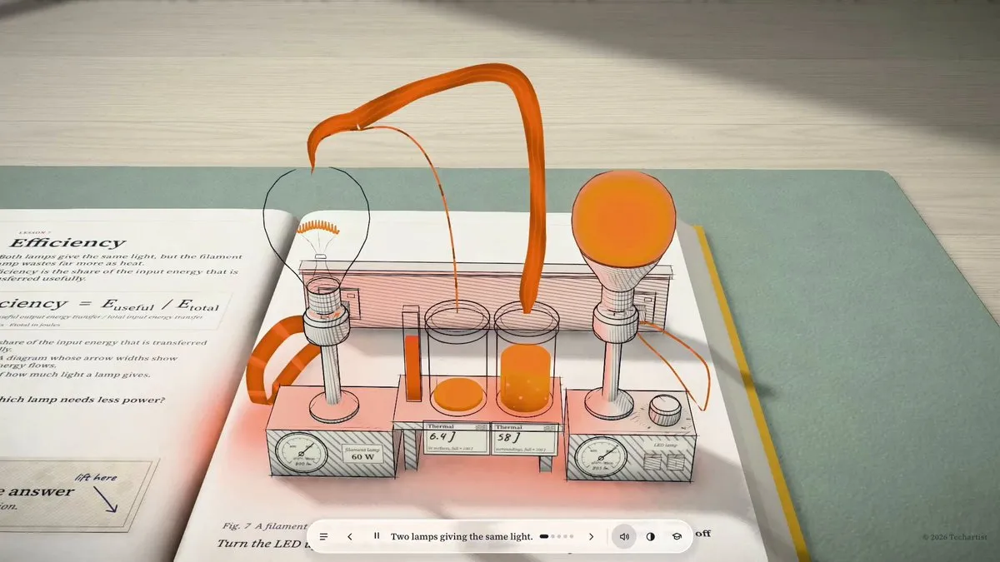
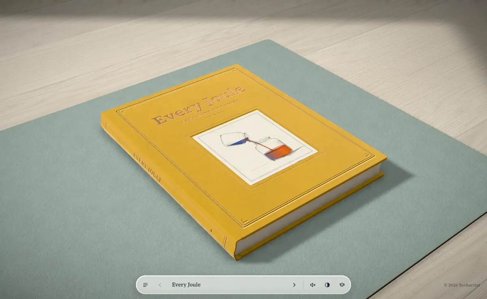
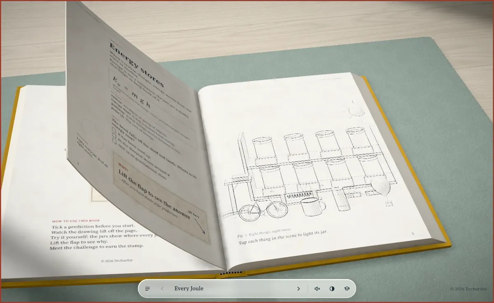
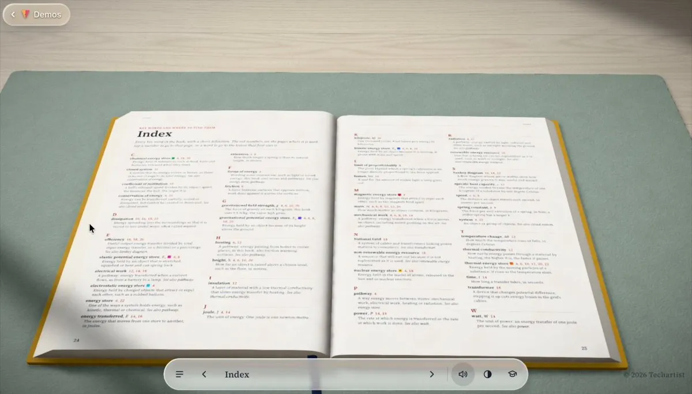

原帖（中文全译）
我那本关于能量的 3D 书又多了九课，现在覆盖了 GCSE 能量这一整章：动能、重力势能与弹性势能、加热、功率、效率、能源，以及能量守恒。
用 Opus 5.5 和 Three.js 做的。完整的书 ↓
— Techartist（@techartist_），2026-10-25 00:45（UTC+8）；附视频 1920×1080、30 秒。发帖时约 7.2 万浏览、1,775 赞、1,704 收藏。
作者续帖（中文全译）
全部十课：iamtechartist.com/every-joule
这本书还配有索引、一份测验、每个数字的出处，以及一份对齐 AQA、OCR、Edexcel、Cambridge IGCSE 和 CBSE 考纲的教师指南。
— 2026-10-25 00:45（UTC+8），附 29 秒视频（翻到书末索引页）。作者另回复一条 “Thank you Zandy”。
被引用的首帖（2026-10-23，中文全译）
教育不一定只有文字和平面示意图。所以我在做一本学生可以上手玩的能量 3D 书：10 节课，让学生去预测、验证、证明。用 Opus 5.5 和 Three.js 做的。
先试试第 1 课《能量存储》：日常物件，以及它们的能量存在哪里 ↓
— 2026-10-23 00:46（UTC+8），约 13.3 万浏览、2,129 赞。续帖：“在线演示：every-joule-lesson1。这一课也配了教师指南，帮助老师上这节课。”作者在评论区回复：“在一所学校演示过，学生和老师都很喜欢”；“学习永远是可视化、可互动的时候更好。”
这是什么
Every Joule（“每一焦耳”）是一本在浏览器里翻的 3D 物理书，副标题 “a physics book about energy”。作品页的介绍是：十课覆盖 GCSE 与 IGCSE 物理的能量主题，“Each diagram lifts off the page as a 3D ink drawing and energy flows as glowing colour between the stores”——每幅图都会从书页上浮起成 3D 墨线画，能量化作发光的颜色在各个“能量存储”之间流动。

十课内容
- 能量存储（energy stores）——日常物件的能量存在哪里
- 动能与重力势能（Ek = ½mv²，Ep = mgh）——小球在轨道上滚下又滚上
- 弹性势能——弹簧
- 弹跳的球为什么会停下来
- 比热容与保温隔热
- 功率
- 效率——两盏灯同样亮，谁更费电
- 发电站与电网（锅炉、汽轮机、发电机）
- 食物里的能量
- 能量守恒
课目按作品页介绍整理；序号据原帖视频与教师指南推断，个别课次顺序以原书为准。
怎么用这本书
书的扉页写着一套五步用法（第 1 课截图可见）：开始前先勾一个预测 → 看图从书页上浮起 → 自己动手试，罐子会显示每一焦耳去了哪里 → “Lift the flap to see why”（掀开翻页看原因）→ 完成挑战拿到印章。作品页概括为 “Students predict, test and prove each idea, lift the flap for the answer and earn a stamp.”

给老师的部分
- 教师指南逐课列出学习目标，并映射到五套考纲：AQA GCSE Physics (8463)、OCR Gateway A (J249) 与 Twenty First Century B (J259)、Pearson Edexcel (1PH0)、Cambridge IGCSE (0625)、印度 CBSE Science (086)。
- 模型假设写明白：例如第 1 课注明“下落的书没有空气阻力、不转动、落地瞬间停止”，书本质量与书架高度是“模型值”；第 2 课注明小球“滑动而不滚动”，摩擦与空气阻力的参数是示意性的。
- 每个数字都有出处，另有索引（关键词 + 页码）和一份测验。
- 没有 WebGL 时，教师页和每课文字仍可阅读。

五个要点
- 从 1 课到 10 课：10 月 23 日先放出第 1 课试读，两天后补齐其余九课，覆盖 GCSE 能量一整章。
- 形式是“书”，不是游戏：保留翻页、目录、图注、索引这些纸书的阅读习惯，图示从纸面浮起成 3D 墨线画，能量用发光色流表示。
- 教学法是“预测—验证—证明”：先猜，再动手，再掀开翻页看原因，最后做挑战盖章。
- 面向课堂：配教师指南并对齐五套主流考纲，交代模型简化，给出数据来源；作者称已在学校实际演示。
- 工具链：作者称用 Claude Opus 5.5 + Three.js 构建；作者本身长期用 Three.js 做互动 3D 作品（海洋、机械表、细胞等，多数在 GitHub 以 MIT 开源）。
制作方法：能查到什么
读者常问“这是怎么做的”。截至 2026-10-27（UTC+8），我们查了作者在两条帖子下的全部回复、他近期的其他帖子、第 1 课的 GitHub 仓库和作者网站。结论是：作者没有公开 Every Joule 的提示词、CLAUDE.md、分步流程、耗时或成本。下面分三部分列出能确认的信息，作者说的和我们推断的分开写。
一、作者自述
- 工具：两条主帖都只写了一句 “Built with Opus 5.5 and Three.js”（首帖 · 全书帖）。
- 配套内容：索引、测验、每个数字的出处、对齐五套考纲的教师指南（续帖）。
- 课堂验证：“Demonstrated this at a school and both students and educators loved it”（回复）。
- 音效：仓库里的 audio/CREDITS.md 说明，所有音效都剪自 Freesound 上 CC0 授权的真实录音（翻页、落书、盖章、水壶、弹簧等），经过剪切、高通滤波、响度统一后，打包成一个音效精灵文件。原文写明 “There is no music and nothing synthesised”。处理脚本在
tools/audio/目录下，这个目录没有放进公开仓库。 - 作者在别的作品里提过的做法（不是专门讲这本书）：有的作品“没用任何 3D 模型、贴图、照片或视频”（海洋探索）；有的作品少量模型来自 Tripo，其余由 Opus 在 Blender 和代码里完成（来源）；他也说过 Opus 5.5 最近常“缺乏常识逻辑”，自己扔掉过整天的工作（来源）；还说过关键在于 “how many [tokens] are you willing to spend”（来源）。
二、从公开构建产物推断
以下是本站阅读 every-joule-lesson1 仓库里打包后的文件得出的推断，不是作者的说法。仓库没有许可证，所以这里只做描述，不转载代码。
- 仓库只有构建产物：整个仓库只有一次提交（2026-10-22 23:58，UTC+8），没有 README、CLAUDE.md、AGENTS.md、提示词或源码目录，真正的源码仓库没有公开。教师页提到的 “research notes”（研究笔记）也不在仓库里。
- 技术栈：用 Vite 打包，Three.js 单独拆成一个包（版本号像是 r170，不确定）；字体用 Caveat（手写体）和 Source Serif 4；声音直接用浏览器的 Web Audio 播放音效精灵；进度保存在 localStorage；会照顾系统的“减弱动画”设置。
- 3D 是程序生成的：没有加载任何外部模型或贴图（没有 glTF/Draco/KTX2 加载器，也没有 .glb 文件）。物件应该是用 Three.js 的几何体在代码里拼出来的，比如旋转体、挤出体、管道、边线和大量实例化网格。
- “墨线画”与“放大镜”：书页上的线稿和排线很可能是先用 Canvas 2D 画好，再贴到 3D 场景里，配合自定义着色器做出图从纸面浮起的效果。“液态玻璃”放大镜用的是物理材质的透射效果，代码注释写着按镜心放大、带色散。另外还用了后期处理。
- 内容和代码分开：能量存储、数字出处、教师指南、出处列表、音效分别是独立模块，说明文字和数据是单独整理后接进场景的。
三、查不到的内容
- 提示词和对话记录：评论区至少六个人问过提示词或流程，包括中文的“请问这是怎么做的？”，作者都没有回答。
- 迭代步骤、耗时、token 或费用：都没有公开。作者博客 iamtechartist.com/blog 目前显示 “No posts here yet”。
- 视频或访谈：没有找到。搜索结果把 YouTube 视频 “Claude Opus 5.5 Built This Interactive 3D Koi Pond” 归到他名下，但这个视频其实来自 Sourany Studio，和他无关。
- 第三方复刻（不是作者的方法）：XiaoHu.AI 写过一篇复刻教程，自己设计了四轮中文提示词，用 Codex 从空目录做出“书从书架掉落”这一课的原型。文中明确写道 “the original creator did not release their prompts or development timeline”，可以当参考思路，不代表作者本人的做法。
许可与可用性
完整版在作者站 iamtechartist.com/every-joule；第 1 课试读托管在 GitHub Pages，仓库 iamtechartist/every-joule-lesson1 只有构建产物，没有许可证文件，页面标注 “© 2026 Techartist”。因此本页只做导读和简短引用，不转载书中文字。需要 WebGL / 硬件加速。
评论
这件作品的价值不在“AI 生成了 3D”，而在把一份教学设计做完整了：考纲映射、模型假设、数据出处、教师模式，这些是课件真正进课堂时缺的部分。Opus 5.5 这类模型降低了 Three.js 场景和交互的开发成本，作者的时间就能花在教学结构和视觉统一上。墨线画加发光能量流的视觉语言也很克制，和本站收录的 Opus 5.5 动效、3D 游戏案例是同一类“代码即作品”。